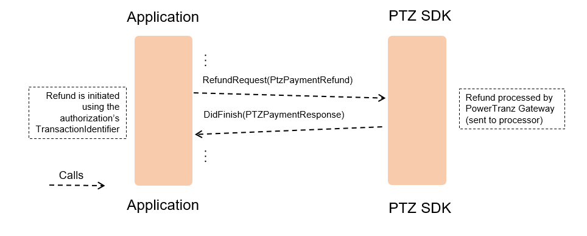

PowerTranz General Guide
Author: Renée Mailhot
Version: 1.0.0 (in progress)
June 29, 2018
Introduction
PowerTranz SDK is a complete solution for payment acceptance for card present EMV compliant transactions in the mobile space or for stand-alone Point of Sale solutions.
The intended audience for this article are business analysts, developers, project management and quality assurance teams. It provides a high-level blueprint of the SDK and typical operation flows in order to supply the reader with a general understanding of PowerTranz solution along with its design for system development, application design and testing.
Context Overview
The SDK has one major entry point with the most important functionalities, and several support functions and handlers to complete the offering of payment related processing. It abstracts all the payment related complexity allowing developers and integrators to focus on their distinctive business logic and added value.
The following illustrates the major software logical components and how they relate:

- Payment Application - Represents the application implementing the specific customer business logic and UI. The application uses the SDK to perform all payment related operations.
- PowerTranz Payment Gateway - Provides the processing capabilities to route transactions for all supported transaction types and associated support operations.
- Payment Terminal - Represents the hardware device used for securely capturing card data. The SDK allows addition of future supported payment terminals.
Platform and Delivery Format
While this article is geared towards Windows implementations, it is important to note that PowerTranz also offers SDKs for iOS and Android. While the functionally is aligned across the three platforms, the implementation and naming conventions are platform specific.
Supported Terminal - Miura M010
| MIURA M010 | |
|---|---|
| Size | H 103 mm x W 71 mm x D 18 mm |
| Battery | 800 mAh |
| Display | Miura Secure 32bits ARM 9 Linux |
| Interfaces | Bluetooth or Wireless and/or USB (for Windows only) |
| Card Interfaces | ICC, MSR, NFC |
| Keyboard | 4 x 3 numeric plus Cancel, Enter and Clear |
| Certifications | PCI PTS V3.0 Certified including Open Protocols and SRED UKCC MasterCard TQM CE, FCC & IC EMV Level I & Level II Certified (Level II off-line / on-line PIN support) |
Supported Functions
PowerTranz operations fit into one of three categories:
Standard Payment Transactions - Card IS present and processed through the use of a payment terminal
| Name | Description | Options |
|---|---|---|
| Auth | Auth can be set to be used as a "Sale" or "Pre-Authorication". If set as Sale the approved authorization is automatically sent to the processor for clearing. If Auth (PtzPaymentAuth) is set as a standard authorization a subsequent action is required to complete transaction (Void/Capture). | Capture (flag as Sale), InlineTip, CashBack, Billing Address, Additional Transaction ID(s) |
| Refund (Credit) | Refund can be set as a Credit type as to credit funds to directly to a credit card and is not tied to any previous Sale or Authorization/Capture. | Billing Address, Additional Transaction ID(s) |
Transaction Modifications - Card IS NOT present as the transaction is processed against an existing transaction
| Name | Description |
|---|---|
| Void | Cancels a previous transaction or used to clear out a potentially erroneous transaction. |
| Capture | Captures a previous pre-authorized for to force it for clearing/settlement. |
| Refund | Refund can be set as a standard refund where funds are returned for to an account previously settled through a Capture or Sale. |
Search Queries - Used to retrieve transaction and order data
| Name | Description |
|---|---|
| Transactions (Single Search) | Returns a single transaction’s specific transaction data along with it's corresponding order data (if applicable). |
| Transactions (Group Search) | Returns a group of transactions and their corresponding order data based on search criteria supplied in the query string. |
| OrdersSearch (Single Order) | Only applies to successful orders which would be of an approved Auth, Sale or Credit. Order data will be returned along with all its individual corresponding transaction(s). |
SDK Usage Scenarios
The following sections describe the typical usage of the SDK for the most common operations that it supports.
Client Credentials
The PowerTranzID, Password, ApplicationID and GatewayID data elements are required when setting up the gateway connection. Further information on this can be found within the User Guide and Technical Reference Documentation.
In addition to these credentials, the PowerTranz gateway further validates the transaction and source. The POS application is always required to provide the TerminalID for Card Present type transctions is assigned to a PED. The TerminalID is therefore set in the payment request (PtzPaymentRequest) parameters for PtzPaymentAuth or PtzPaymentRefund (as a Credit).
Descriptions of the IDs and their purpose are as follows:
- PowerTranzID – Merchant identifier for the merchant’s account with PowerTranz. A merchant may have one or more PowerTranz IDs depending on the number of locations. For example, a merchant with one location would only have one PowerTranzID. A merchant with 3 physical locations may have 3.
- Password - This is the merchant’s unique processing password and tied to the PowerTranzID
- ApplicationID – Each POS application is assigned with a ApplicationID. A merchant with various applicatoins may be assigned multiple applicationIDs.
- GatewayKey – GatewayID is assigned by PowerTranz and is used by the gateway for internal routing and may be unique to each implementation (TBD).
- TerminalID - Each physical card terminal (PED) has a unique Terminal ID. One PowerTranzID can have multiple TerminalIDs associated with it.
NOTE : Test credentials are only provided by a PowerTranz Representative in the client onboarding process.
The following illustration shows the breakdown of how these credentials would be laid out for a merchant with multiple physical stores and multiple POS applications (and versions). The IDs below are not the actual format, for demonstration only.

TransactionIdentifiers
Every transaction processed regardless of transaction type, will be assigned a unique TransactionIdentifier (GUID) by the SDK and will be returned in the response data back to the POS. The TransactionIdentifier is always the ID of record within PowerTranz for the transaction being processed. Not only is it required for subsequent transaction requests such as Voids, Captures or Refunds but is required for submitting queries on transactions and orders.
Examples:
- Capturing an Authorization – You will need the TransactionIdentifier of the original Authorization
- Refunding an Authorization that was settled (Captured) - TransactionIdentifier of the original Authorization is required
- Querying a specific Transaction –TransactionIdentifier of the Authorization, Sale or Credit is required
- Querying an Order –TransactionIdentifier of the Authorization, Sale, Credit, Void, Capture or Refund is required
Other Identifiers
Other “Order” or “Transaction based” identifiers that can be supplied are optional and are assigned by the POS. These identifiers (if provided) are stored with the transaction record within PowerTranz system for additional report data and search criteria.
| Name | Description |
|---|---|
| OrderIdentifier | Assigned to a customer order or purchase order. Not applicable with Refunds, Captures or Void. |
| ExternalIdentifier | Unique Identifier assigned to an individual transaction by the POS. Its purpose is determined by the Merchant or POS. Can be assigned to all transaction types |
| ExternalBatchIdentifier | Assigned to one or many transactions. Used to identify a group of transactions for reporting purposes. Applicable to all transaction types but Voids |
| ExternalGroupIdentifier | Assigned to one or many transactions. Used to identify a group of transactions for reporting purposes. Applicable to all transaction types |
Response Handling
When processing transaction, the integrated payment application should continue to consider a transaction in a pending or unknown state until the final response is received from the SDK.
As the PowerTranz solution is an event driven integration, transaction response events are triggered to provide information up to the integrated application on whether the transaction cycle failed/stopped or that it completed with either an Approval or Decline. This also will include the full transaction response or exception.
It is important that the integrating application handle and manage all cases (example : failures, an unknown transaction status or transaction that triggers an auto-reversal)
The integrated application will receive one of following notifications for the described cases:
Transaction cycle has COMPLETED/FINISHED and the APPROVAL STATUS IS KNOWN.
| Name | Description |
|---|---|
| DidFinish | Transaction cycle is completed with a valid approval or decline and there are no online requests pending. Returns :
|
| DidFinishWithReversal | This can potentially occur with an EMV chip card where the transaction cycle did completed with a valid approval from the card Issuer but the chip card makes the final decision to reject the transaction triggering a reversal to cancel the approved authorization. Returns :
|
Transaction is CANCELED or an ERROR has occurred causing an interruption or error in the transaction cycle
| Name | Description |
|---|---|
| DidFail | Occurs when an there is an exception before the transaction goes out to the Gateway for online processing. Returns :
|
| DidFailWithReversal | Occurs when an there is an exception after the transaction has gone out to the Gateway for online processing. The transaction status is considered unknown therefore an auto-reversal is performed to attempt to clear out the possible transaction upstream. Recommended that the transaction status be verified. Returns :
|
TRANSACTION STATUS UNKNOWN
When the final status of the payment is unknown due to an error in the integrated application or it timing out prior to receive the response from the Gateway. In this case, it is recommended that the transaction be verified by a query or reviewing activity through the PowerTranz portal.
Process Flows
Card Present Transactions
Auth/Sale
The Authorization is a card present transaction processed through the card terminal (as EMV or Swipe). The operation can be used to request a “pre-authorization” or perform a “sale”. The determining factor is using the Capture parameter to enable the transaction to be automatically captured or not.
- Authorization as “pre-authorization”: only authorizes the card for the transaction amount. It requires a subsequent action to complete the transaction. The possible options are:
- Void to cancel the Authorization in its entirety (full amount); Issuer releases hold of funds that had been placed on the card during the authorization
- Capture to complete the transaction; settles and debits funds from the card account If the Authorization is successful (Approved) and not closed with a subsequent Void or Capture, the cardholder will see “pending charge” on their account statement. Issuers will generally drop the hold on the authorization within 48-72 hours if it is not closed. It is highly recommended that the transaction is closed within that time frame to avoid disputes.
- Authorization as “Sale”: is an authorization and capture within the same transaction (auto-capture). To enable an authorization as a Sale a capture flag will need to be set within the transaction request. There is no need to submit a subsequent transaction to complete the transaction (unless it is decided to cancel the Sale - whereby a Void will have to be issued within 20 minutes of the Sale), otherwise a Refund will be required in order to credit the funds back to the card.
Summary of options
The following table describes the main options that can be applied to the Authorization transaction.
| Option | Description |
|---|---|
| Capture | The value of this flag determines if the operation is a “Pre-authorization” or a “Sale”. |
| InlineTipType | This parameter controls if a tip prompt is shown to the cardholder on the card terminal. If enabled it can be set to take an amount or percentage |
| EnableCashBack | If enabled a Cashback prompt to allow the cardholder to enter a cashback amount on the card terminal. This is only supported with certain merchant categories. |
The following diagram illustrates an Auth (pre-authorization) transaction using an EMV card. The SDK handles the gateway connection transparently and provides the application with the response information. During transaction processing, the SDK can provide informative events and status changes triggered to the POS application (as example like the DidReceiveCardEvent and DeviceEmvTrxnStarted or CardEventRemoved illustrated in the diagram below).
Once the transaction completes, the final transaction status message will remain on the device display. It’s recommended that the terminal screen be cleared or that there is a change to custom text to be displayed on the screen rather than the last transaction status be left for the next customer/cardholder to see. The length of time is determined (or limited) by the integrating point-of-sale software.
Auth/Sale with Auto-Reversal
The following diagram illustrates an exception situation that is handled automatically by the SDK. In this scenario, an Auth transaction is initiated and an error condition occurs after the authorization has been requested. In these situations, the SDK will automatically void the authorization request. Depending on how the Auth failed or was successful but subsequently rejected causing an auto-reversal (Void) the application will receive DidFailWithReversal or DidFinishWithReversal along with the PtzPaymentResponse of the original transaction (not that of the void) and whether the auto-reversal (Void) was successful.
In addition, it is recommended that provisions be made to further validate the transaction status through a Transaction Query should there be any doubt of the original transaction’s status and/or for assurance.

Possible reasons for Auto-Reversal (Auto-Void) :
- Issuer Authentication Error (ICC/Card Decline)
- Device Disconnected while processing
- Transaction Canceled while processing
- Time Out or System Error
- Transaction went for online processing but due to error status is unknown
Examples where these Auto Void can occur:
- Issuer Authentication Error (ICC/Card Decline) – In an EMV transaction the card itself can make the final decision to decline a transaction. Therefore, even though an authorization is approved by the card Issuer, the card can subsequently reject the transaction triggering the subsequent Auto Void to cancel the Approved Authorization.
- Device Disconnected – Loss of connection of the PED while a transaction is being processed. The SDK will trigger a Void in attempt to clear out a possible Authorization
- Transaction Canceled – Card removed prematurely while and Authorization is being processed and prior to the response being returned to the PED.
- Errors – Certain error scenarios will trigger an Auto Void as an extra precaution to clear out a potential authorization upstream with the Issuer.
Credit
The Refund operation serves a dual purpose. It can be used not only to issue refunds against an original transaction but also used to initiate a Credit transaction through a card terminal. This distinction is done by setting the Refund parameter to False (Credits) or True (Refunds).
Credit transactions are not tied to an original transaction and always require the card to be present at the card terminal. Credits do not require provision of a TransactionIdentifier. The following diagram illustrates a credit transaction. The transaction credits an account without a previously authorized transaction. No transaction identifier needs to be referenced for the credit request.
Restrictions apply for credits. Not all merchant accounts allow Credits. Please ask a PowerTranz support representative for further details.
Important note: Credits should be handled with caution by the Merchant. There is additional risk with a Credit, as this transaction type is not tied to an original transaction to help manage the amount threshold and the card to which it's being applied to. It is recommended that there are sufficient internal policies and procedures on issuing credits as a business along with controls in place at the POS level to reduce risk of issuing credits with unintentional human-error or with intentional wrong doing. Examples of why extra attention is warranted are with human-error with accidental over-crediting, issuing credit to the wrong card, rogue employee crediting cards without authorization or permission.
The following are the typical reasons for a Credit transaction to be denied / rejected:
- Credits are not enabled on the merchant account
- Credit amount exceeds threshold
The following diagram illustrates the workflow involved in this operation.

Modification Transactions
Void
When a Void is performed, the original transaction is canceled. The transaction is ‘undone’ by the system as though it never occurred. Voids are initiated by the POS application and there is no interaction with the terminal or the customer’s card.
Examples where this operation can be used:
- To fix a mistake where an order or amount was entered incorrectly and the transaction itself had already completed.
- Where there is a questionable error at the POS causing an interruption with processing the original Authorization and the operator wishes to clear out a possibility of an Authorization having taken place upstream before reattempting.
The following diagram illustrates the SDK interactions for a void transaction.
Void Requirements
When is the best time to process a Void for various Authorization scenarios?
- Authorization as Sale (auto-capture): On an Authorization (as Sale) that was automatically captured, the Void should be performed within a reasonably short amount of time after the original Authorization (typically within 20 minutes) otherwise the Void might be rejected, as the sale may have already been committed for settlement.
- Authorization with subsequent Capture: On an Authorization that has been subsequently captured, the Void should be within 20 minutes of the Capture otherwise the Void might be rejected, as the Authorization may have already been committed for settlement.
- Authorization without subsequent Capture: Void should be issued well within 2-3 days from the original authorization (Authorization) to remove the pending charge and hold of funds on the customer’s card. Issuers drop the hold on funds typically after 2-3 days if the Authorization was not met with a Void (or Capture) as to close (or complete) the transaction. To initiate a Void on an Authorization, the TransactionIdentifier of the original transaction being canceled is the only required field. Amount is not required if the original transaction will be fully canceled (Full Reversal).
The following are the typical reasons for a Void transaction to be denied / rejected:
- Void already processed
- Transaction settled and therefore can no longer be reversed
- Invalid TransactionIdentifier The following diagram illustrates the workflow involved in this operation.
Capture
The Capture operation is used to capture an amount against a previous successfully authorized transaction that has not yet been captured (Authorization only & not Voided). The transaction is sent to the processor to be settled in real-time.
The following diagram illustrates the SDK interactions for an Authorization followed by a Capture. In this example it is assumed that the terminal is connected.
Capture Requirements
The amount requested cannot exceed the TotalAmount from the response of the previously authorized transaction amount unless the merchant account is set to support such circumstances.
NOTE: If InlineTip or Cashback was enabled in the original Authorization, the TotalAmount returned in the Authorization response can differ from the TotalAmount supplied in the Authorization Request. TotalAmount will always include the original requested amount and InlineTip or CashBack amount.
All accounts have a capture cut-off time which is dictated by the Processor. Most processors encourage merchants to complete transactions within 2-3 days. Any Captures that are processed beyond the determined cut-off will fail and no funds can be debited from the card. In these circumstances, a new transaction has to be processed (Authorization and Capture or Authorization as Sale).
Types of Captures & Capture Amounts:
- Full Capture - If the full amount is captured, then the transaction is closed from further captures.
- Partial Captures - If the requested capture amount is less than the previously authorized amount, then the transaction is closed from further captures.
- Captures in excess – Restrictions apply. This is only permitted for merchants in certain industries and merchant accounts. This is generally not supported with a standard merchant account. PowerTranz support representatives can provide more information on these scenarios.
Should a transaction need to be canceled after a transaction is settled, only Refunds can be used in order to credit the card or return funds to the card.
The following are the typical reasons for a Capture transaction to be denied / rejected:
- Transaction is already processed or maximum Capture amount exceeded
- Original Authorization transaction has exceeded the Capture cut-off
- Invalid TransactionIdentifier
The following diagram illustrates the workflow involved in this operation.
Refund
When the Refund operation is used to issue refunds against an original transaction the card is not required to be present. Alternatively, the TransactionIdentifier is used.
The Refund returns funds regarding a transaction that was previously settled through a captured Pre-Authorization or an Authorization (as Sale) on the PowerTranz gateway. Refunds are sent to the processor to be settled in real-time.
Refunds need to be set by the POS application to enable the transaction as a true “Refund” where the physical card is not required, otherwise it is considered a straight credit. The TransactionIdentifier of the original Authorization must be included along with the TotalAmount to be refunded. Refunds can be issued for partial or full amounts of the original settled amount. TotalAmount cannot exceed the total amount settled and not yet refunded.
The following diagram illustrates a refund transaction. The transaction is performed referencing a previously approved transaction that needs to be refunded.

Refund Requirements
In cases where an Authorization was partially captured, only the total amount that was captured can be refunded. All accounts have a refund cut-off time which is dictated by the card associations. Some processors may have further limitations on how long a merchant can issue a refund. In general, this time frame is 180 days from the original Authorization.
Types of Refunds with Captured amounts:
- Full Refund - If the full amount is captured on an Order then a Refund can be issued against that order for that said amount.
- Partial Refund – Refunds can be issued to an amount less than the originally captured and settled amount. Multiple refunds can be issued on the same order but the total cannot exceed the original captured amount nor exceed the remaining balance available for refunds.
In cases where the amount to be refunded exceeds the original Captured amount or if it happens beyond the cut-off time frame, an alternate payment method may be required (for example, to issue the Refund as Credit if applicable to the merchant account type).
The following are the typical reasons for a Refund transaction to be denied / rejected:
- Refund amount in excess of the original captured amount
- Refund cut-off time exceeded
- Original order was not captured/settled (only Authorized therefore there was no debit to the card’s account)
- Original order was Voided (canceled) therefore there is nothing to Refund
- Invalid TransactionIdentifier
Order and Transaction Queries
The following diagram illustrates the SDK search functionality. The gateway bases this functionality on a set of criteria that the application needs to provide through the SDK. The result is a list of matching transactions.
There are 3 types of Search queries you can initiate:
- Transaction Search (Single) – Applicable to ALL transaction types. Pull individual transaction data along with any if its corresponding Order Data (if available).
- Transaction Search (by Group) - Applicable to ALL transaction types and returns all the individual transactions that fall within the parameters indicated in the request.
- Order Summary – Applicable to an approved Auths, Sales or Credits. Order Summary Data along with individual transaction data for all transactions tied to the order.
NOTE: Data grouping amongst the three options vary to some degree however the data attributes are the same.
TransactionDetailsAsync (Single)
TransactionDetailsAsync is used to retrieve details of a single transaction. Order data relating to the transaction is also included in a data sub-set.
The TransactionIdentifier is the only search parameter for this type of request.
The following diagram illustrates the search :
Please see Annex for the sample of PtzTransactionResponse.
TransactionSearchAsync (Group Listing)
TransactionSearchAsync is used to retrieve a listing of transactions based on search criteria used.
Applicable search parameters are :
| Name | Description |
|---|---|
| Approved | Flag indicating whether or not the desired transactions were approved. Set to null to include both approved and declined |
| AuthorizationCode | Authorization Code associated with the desired transactions. Only applicable to approved authorizations or salses |
| StartDateTime | For date based search. End Date required if this is specified |
| EndDateTime | For date based search. Start Date required if this is specified |
| ExternalGroupIdentifier | ExternalGroup identifier related to the desired transactions |
| ExternalBatchIdentifier | External batch identifier associated with the group of desired transactions |
| OrderIdentifier | Order ID of the desired transactions |
| TerminalId | Terminal ID of the PED associated with the transactions |
The following diagram illustrates the search :
Please see Annex for the sample of PtzTransactionsResponse.
OrderDetailsAsync (Single Order)
This query returns order data along with a listing of all transactions associated with the order.
The TransactionIdentifier is the only search parameter for this type of request.
The following diagram illustrates the search :
Please see Annex for the sample of PtzOrderResponse.
Annex
Methods
PTZApi Class
The following are communication to the PowerTranz Gateway Api to perform a specific transaction or search request. Links to the Reference Documentation are included in the table.
| Description | |
|---|---|
| PaymentAuthorizeAsync | This function attempts to authorize the payment data provided in the request. On completion, an event handler is called (DidFinish, DidFinishWithReversal, DidFail or DidFailWithReversal) with the response PtzPaymentResponse otherwise the exception (for DidFail or DidFailWithReversal) Called from:
DO NOT CALL THIS DIRECTLY |
| PaymentCreditAsync | This function attempts to make a credit directly to a card without the need of a previously approved sale or captured transaction. On completion, an event handler is called (DidFinish, DidFinishWithReversal, DidFail or DidFailWithReversal) with the response PtzPaymentResponse otherwise the exception (for DidFail or DidFailWithReversal) Called from:
DO NOT CALL THIS DIRECTLY |
| PaymentCaptureAsync | This function attempts to capture a previously authorized payment. |
| PaymentRefundAsync | This function attempts to capture a previously settled payment(Captured Auth or Sale) |
| PaymentVoidAsync | This function attempts to void a Auth, Sale of Credit payment request that has not been settled. |
| OrderDetailsAsync | Returns order and corresponding transctions of a successful order (Approved Auth, Sale or Credit) |
| TransactionSearchAsync | Returns a listing of transcations based on the search criteria used |
| TransactionDetailsAsync | Returns details of a single transaction |
PTZMiuraTerminal Class
The following are common functions related with initiating transactions with use of the card terminal and controling some of the terminal's functions/features. Table includes links to the Reference Documentation.
| Description | |
|---|---|
| BeginEMVTransactionWithRequest
|
The request object used to initiate and complete an contact (EMV/MSR) transaction request through the terminal Applicable to:
|
| BeginNFCTransactionWithRequest |
The request object used to initiate and complete an contactless (EMV/MSR) transaction request through the terminal Applicable to:
|
| ConnectTerminalWithInputTypeAsync | This function attempts to connect the terminal. |
| CancelTransaction | Used to back out of a transaction. If the transaction is canceled while a transaaction has already been sent out online for authorization this action will trigger an auto-reversal in attempt to clear out a possible authorization |
| DisconnectTerminal | Disconnects the currently connected terminal and closes communications from the mobile device. |
| DisplayText | If the terminal supports it, this function allows displaying custom text. Text formatting should be done accounting for display size. |
| GetDeviceInfo | Gets Terminal information. |
| GetFirmwareVersion | This function returns the firmware version for the connected terminal. |
| GetHardwareId | This function will return the Hardware Id of the credit card terminal. |
| GetSerialNumber | This function returns the serial number for the connected terminal. |
| ManualEntrySupported | This function returns the indication if the terminal supports manual card entry. |
| NfcSupported | This function returns the indication if NFC is supported or not. |
| BluetoothSupported | This function returns the indication if Bluetooth is supported or not. |
| ResetDevice | Performs a soft reset on the terminal. Consider using CancelTransaction instead. |
| TcpIpSupported | This function returns the indication if TCP IP is supported or not. |
| TerminalCanDisplayText | This function returns the indication if the terminal supports displaying custom text. |
| TerminalClearDisplay | This function clears the display on terminals that allow custom text to be displayed. Highly recommended to clear screen when device is not in use to avoid burn-in |
Data Attributes
| Name | Format | Description |
|---|---|---|
| ApplicationId (EMV Card AID) | AN(32) | Returned in Receipt Data. Only meaningful for chip transactions. Contains the application AID that was used for the transaction. Separate from the ApplicationId used for authenticaiton with the Gateway. |
| ApplicationId (PtzApi.PtzApi) | GUID(36) | Identifier for the application that is using the SDK. Assigned by PowerTranz (per POS application). Example: 822e9bb2-c642-415a-a78e-139c548ec4b9 |
| ApplicationLabel | AN(16) | Application label as defined by the card issuer for chip transactions. This element should be used whenever the Application Preferred Name is not available or is expressed in a non-supported character code page. |
| ApplicationPreferredName | AN(16) | Only meaningful for chip transactions. Required for EMV receipts. |
| ApplicationResponseCode | AN(2) | Only meaningful for chip transactions. Required for EMV receipts. |
| Approved | BOOL | Flag that indicates if the payment has been approved. This attribute is returned in the response both in the main response body and the sub-object OnlineSummary. IMPORTANT to note that it is the Approved status within the main response body that indicates the OVERALL Approval status of the transaction. |
| AuthorizationCode | AN(6) | Authorization code returned by an approved transaction |
| AuthorizationMode | ENUM | Indicates if the authorization decision was made by the issuer or by the card (in case of EMV offline authorizations). Values can be: 0 - None 1 - Issuer 2 - Card |
| AVSResponseCode | AN 3 | Address verification response code. Reserved for future use. |
| BillingAddress | Sub-Object | Optional data object where the cardholder's billing address can be supplied |
| BluetoothSupported | BOOL | Flag indicating if Bluetooth is supported for connectivity. Possible values are: 0 - Not supported 1 - supported |
| Capture | BOOL | Indicates if the transaction should be automatically captured during authorization. Possible values are: 0 - Do not Capture 1 - Capture |
| CaptureCount | N(2) | Total number of Captures applied to an Order |
| CardBrand | AN | Brad of the card used in a transaction |
| City | AN(25) | City associated with an address |
| Code | AN(4) | Error code returned by the gateway as described in Response Codes |
| CountryCode | N(3) | Country code associated to an address |
| CreditCount | N(2) | Total number of refunds (or Credit) applied to an order |
| CurrencyCode | N(3) | Currency code used to express the transactions amounts. Defined according to ISO4217. |
| CustomData | AN(255) | Host Specific custom data submitted in a transaction request. |
| CustomLevel2Data | AN(255) | Host Specific custom data submitted in a transaction request. |
| CustomLevel3Data | AN(255) | Host Specific custom data submitted in a transaction request. |
| CVMMethod | ENUM | The Cardholder Verification Method that was used for the transaction. Possible values are: 0 - No CVM 1 - Verified PIN Online 2 - Verified PIN Offline 3 - Signature (Prompt cardholder for signature) |
| CVVResponseCode | AN(2) | CVV/CVC validation result code. Reserved for future use. |
| EmailAddress | AN(50) | Email address of the associated person at the address |
| EmvIssuerAuthenticationData | AN(255) | EMV Issuer Authentication data. It may be returned for chip transactions, in which case it is automatically made available to the chip. |
| EmvIssuerScripts | AN(255) | Issuer scripts that may be returned by the card issuer in the response to chip transactions. When present, these are automatically made available to the chip. |
| EnableCashback | BOOL | This flag indicates if Cashback is allowed on the terminal in case the presented card and merchant account supports it. Possible values are: 0 - Not enabled 1 - Enabled |
| EndDateTime | DT | The end date and time for a date based transaction search |
| Error | Sub-Object | Body of data containing any error codes along with their corresponding descriptive text |
| ExtendedData | Sub-Object | Data structure containing optional extended data that the merchant can add to the transaction prior to processing. Contains secondary address and custom data fields. |
| ExternalBatchIdentifier | AN(50) | Optional external batch number supplied by the POS Application. Used for the merchant to associate the transaction to a batch. |
| ExternalGroupIdentifier | AN(50) | Optional external group number supplied by the POS Application. Used for the merchant to associate the transaction to a group. |
| ExternalIdentifier | AN(50) | Optional unique external identifier generated by the POS Application. Must be unique |
| FirstName | AN(30) | First name of the associated person at the address |
| GatewayKey | GUID(36) | Gateway key provided by PowerTranz. This is used to access the gateway. Example: 6993f4c5-3b55-4f8f-98b3-371d9924e6d8 |
| InlineTipType | ENUM | Indicates whether or not inline tip introduction is enabled in the terminal when the transaction is performed. Possible values are: 0 - Not Enabled (Default) 1 - Tip Type Amount 2 - Tip Type Percentage |
| ISOResponseCode | AN(3) | Response code as present in the ISO authorization response message. |
| IsProduction | BOOL | This flag to set the SDK into diagnostic mode for additional logging. Possible values are: 0 - Diagnostic Mode 1 - Production Mode (minimal logging) |
| IssuerApplicationData | AN(255) | Only meaningful for chip transactions. Required for EMV receipts. |
| LastCaptureDateTime | DT | Date and Time of the most recent Capture applied on an Order |
| LastCreditDateTime | DT | Date and Time of the most recent Refund applied to an Order (or that of a Credit) |
| LastName | AN(30) | Last name of the associated person at the address |
| Line1 | AN(50) | First line of the address |
| Line2 | AN(50) | Second line of the address |
| ManualSupported | BOOL | Flag indicating if manual is supported for connectivity. Possible values are: 0 - Not supported 1 - supported Currently PowerTranz doesn't suport manual with Miura M010 |
| MaskedPAN | AN(19) | The Primary Account Number used for the transaction, obfuscated according to PCI rules. Used for receipt data |
| Message | AN(5) | Error message associated with an error. As informed by the server. |
| NFCSupported | BOOL | Flag indicating if Contactless is supported for connectivity. Possible values are: 0 - Not supported 1 - supported |
| OnlineSummary | Sub-Object | Data structure in a payment response containing responses and results issued by the Issuer, Processor and Gateway from online processing |
| OrderIdentifier | AN(50) | Optional order identifier for the transaction supplied by the POS |
| OriginalTrxnDateTime | DT | Date and Time of the original transaction for a payment or of an order |
| OriginalTrxnIdentifier | GUID(36) | This is the original transaction identifier for a Transaction Modification |
| OtherAmount | DEC 18,3 | The other amount (if any). Typically used for cashback transactions |
| Password | AN(25) | Merchant unique password to access the gateway. This is included in the header for all requests. Example: m9mOPK@vpUM |
| PhoneNumber | AN(25) | Phone number of the associated person at the address (Primary) |
| PhoneNumber2 | AN(25) | Phone number of the associated person at the address (Optional additional number) |
| PhoneNumber3 | AN(25) | Phone number of the associated person at the address (Optional additional number) |
| PosEntryMode | ENUM | Indicates how the card was presented and readby the terminal. Values can be: 0 - Chip Read 1 - Contactless 2 - Swiped (MSR) |
| PostalCode | AN(10) | Postal code of an address |
| PowerTranzID | AN(25) | The unique PowerTranz Merchant account unique identifier. To be used on all requests to the gateway. Example: 99901066 |
| ReceiptData | Sub-Object | Data structure in a payment response containing data for receipt printing |
| ResponseMessage | AN(50) | Complementary explanation to the response code value (if available). |
| SecondaryAddress | Sub-Object | Optional data sub-object where additional cardholder address data can be supplied (ex: shipping, passenger, guest) |
| SettledAmount | DEC 18,3 | Net amount submitted to the processor for settlement |
| StartDateTime | DT | The start date and time for a date based transaction search |
| State | AN(25) | State or Province associated with an address |
| TaxAmount | DEC 18,3 | The Tax amount (if any was provided in the request) |
| TCPIPSupported | BOOL | Flag indicating if TCPIP is supported for connectivity. Possible values are: 0 - Not supported 1 - supported |
| TerminalID | N(8) | The terminal identifier used to capture the transaction data. This information needs to be provided prior to start the transaction. |
| TerminalVerificationResults | AN(10) | Only meaningful for chip transactions. Required for EMV receipts. |
| TipAmount | DEC 18,3 | The tip amount (if any). |
| TimeoutInterval | N(3) | Time in seconds for the SDK to wait before timing out. Should be greater than the processors timeout (processor dependent - typically 45-60 seconds) |
| TotalAmount | DEC 18,3 | Contains the total approved amount (including tip if any) |
| TotalCaptureAmount | DEC 18,3 | Total amount that captured on an order |
| TotalCreditAmount | DEC 18,3 | Total amount credited (refunded) on an order |
| TransactionDateTime | DT | Date and time for the transaction. |
| TransactionIdentifier | GUID(36) | Unique transaction identifier that is used to reference the transaction in the server. It can be used to refer to an original transaction to conduct refunds, voids and captures. |
| TransactionStatusIndicator | AN(4) | Only meaningful for chip transactions. Required for EMV receipts. |
| TransactionType | ENUM | Flag to indicate the transaction Type. Types are : 0 - None 1 - Authorization Only 2 - Sale 3 - Capture 4 - Void 5 - Refund 6 - Credit |
| VoidDateTime | DT | Indication that an order was reversed. Provides the Date and Time of the Void/Reversal |
Response Codes
The PowerTranz SDK has the following possible outcomes for transactions:
- Approval – Transaction was approved, accepted and successful;
- Decline – Transaction was declined by the issuer or declined by the card (not due to a failure - declines are not errors);
- Failure – Transaction was not successful as it was either rejected or there was an error at some point during processing.
There are 5 possible fields that indicate and describe the result of the transaction. The three that will always be populated in all responses regardless of the transaction type or status are Approved, IsoResponseCode and ResponseMessage. In addition to this, should a transaction fail at the PowerTranz Gateway level (not an Issuer or Processor failure/rejection) then there will be the additional subset of Error data passed back and it will contain Code and Message. This additional error data will provide more defined and descriptive reasons for the failure. Below is a table showing which fields will be populated in the response for the given result status of the transaction.
Additional explanation
Approval: When a transaction is successful (approved), the main indicators are that the approved field contains ‘true’. In addition, the IsoResponseCode field contains ‘00’. The corresponding response code description is returned within the ResponseMessage. UNo error data is populated.
Declines or Failures which are Issuer/Processor based: If a transaction is declined, rejected or there was a failure upstream with the processor or Issuer, PowerTranz always returns ‘false’ within the Approved field along with an IsoResponseCode and its corresponding ResponseMessage. All available codes for the IsoResponseCode listed in the IsoResponseCode section of this appendix. Note that in this context, Error (Code and Message) does not contain any response data for Issuer/Processor denials or failures.
Failures which are PowerTranz Gateway based: Transactions that fail at the PowerTranz gateway level return ‘false’ within the Approved field along with the standard IsoResponseCode and its associated ResponseMessage. In addition to these 3 fields, PowerTranz includes additional data within Error (nested fields namely Code and Message). The Error data is meant to provide descriptive detail on the error(s) that were triggered. It is possible to have more than one set of Error Code and Message returned.
The following tables outline all the possible statuses and resulting codes:
Approval
Decline or Failure (Issuer or Processor based)
Failure (at PowerTranz Gateway level)
ISO Response Codes
The following table describes all the ISO Response codes that can be returned from the SDK.
Payment - Responses
PtzPaymentResponse Data Model
| Name | Format | Description |
|---|---|---|
| TransactionType | AN(1) | Indicator of the transaction type |
| Approved | BOOL | Flag indicating the OVERALL approval status/success of the transation |
| TransactionIdentifier | GUID (36) | Unique Identifier generated by PowerTranz. Ensure this ID is stored within the POS environment for future use and searches |
| TotalAmount | DEC 18,3 | TotalAmount of the transaction (includes any tip or cachback amounts) |
| TipAmount | DEC 18,3 | Tip portaion of the TotalAmount of the transaction (where supported) |
| OtherAmount | DEC 18,3 | Cashback portion of the TotalAmount (where supported) |
| CurrencyCode | N(3) | Currency code of the transaction |
| ExternalIdentifier | AN(150) | Identifier associated with what waqs provided by the POS in the payment request |
| OrderIdentifier | AN(150) | Identifier associated with what waqs provided by the POS in the payment request |
| OriginalTrxnIdentifier | GUID (36) | For Transaction Modification type transactions. TransactionIdentifier of the Original tranaction the Transaction Modification was applied against |
| OnlineResponse | sub-object | Data sub-object of the main response |
| Approved | BOOL | Issuer/Processor response. This is NOT indicative of the overall approval status. Refer to the "Approved" in main object for the overall status |
| AuthorizationCode | AN(6) | Authorization Number provided by the card Issuer on Auth/Sale approvals |
| AvsResponseCode | AN(3) | Reserved for ecommerce |
| CvvResponseCode | AN(3) | Reserved for ecommerce |
| IsoResponseCode | AN(3) | ISO Response Code returned from the Gateway |
| EmvIssuerAuthenticationData | AN(255) | EMV Authenticatoin Data sent to Gateway from Issuer |
| EmvIssuerScripts | AN(255) | EMV scripts sent to Gateway from Issuer |
| ResponseMessage | AN(3) | Response Code descriptive text |
| CustomData | AN(255) | Processor dependent; Custom data returned from the Processor |
| CardBrand | AN(25) | Brand of the card used in the transaction |
| PanToken | AN(255) | PAN token returned if subscribed to the service |
| Errors | sub-object | Sub-object of onlineSummary. Provides a list of Error Codes and Descriptive Text returned from the PowerTranz Gateway in the event of an error. Depending on the exception there may be more than one instance of Code and Message |
| Code | AN(2) | PowerTranz error code |
| Message | AN(50) | Descriptive text for the error code |
| ReceiptData | sub-object | Data sub-object of the main response |
| ApplicationPreferredName | AN(50) | Must be present on EMV Receipt |
| ApplicationLabel | AN(50) | Must be present if there is no ApplicationPreferredName |
| MaskedPan | AN(19) | Masked PAN |
| PosEntryMode | N(2) | Point of Sale Entry Mode Flag. Required for all payment receipts. |
| CvmMethod | N(2) | Cardholder Verification Method Flag. Required for all payment receipts. Also indicates whether to present/prompt for signature. |
| AuthorizationMode | N(2) | Party who authorized or decline the transaction. Required for EMV payment receipts. |
| ApplicationId | AN(50) | Must be present and unaltered on EMV Receipt |
| TerminalVerificationResults | AN(50) | Must be present and unaltered on EMV Receipt |
| IssuerApplicationData | AN(255) | Must be present and unaltered on EMV Receipt |
| TransactionStatusIndicator | AN(50) | Must be present and unaltered on EMV Receipt |
| ApplicationResponseCode | AN(2) | Must be present and unaltered on EMV Receipt |
PtzPaymentResponse Samples
DidFinish - Authorization Approved
{
"TransactionType": 1,
"Approved": true,
"TransactionIdentifier": "2d8c3fe8-e85f-4ed0-a0d3-e757fe887a96",
"TotalAmount": 80.0,
"TipAmount": 0.0,
"OtherAmount": 0.0,
"CurrencyCode": "840",
"ExternalIdentifier": "extid 1",
"OriginalTrxnIdentifier": null,
"TerminalResult": 1,
"OnlineResponse": {
"Approved": true,
"AuthorizationCode": "008328",
"AvsResponseCode": null,
"CvvResponseCode": null,
"IsoResponseCode": "00",
"EmvIssuerAuthenticationData": null,
"EmvIssuerScripts": null,
"ResponseMessage": "Transaction is approved.",
"CustomData": null,
"CardBrand": "MasterCard",
"PanToken": "2f4qamf4sv2lfnjfgvcsv6694lf0y1em0ojeoak5nklyeubsbs",
"Errors": null
},
"ReceiptData": {
"ApplicationPreferredName": null,
"ApplicationLabel": "MasterCard",
"MaskedPan": "543211******1234",
"PosEntryMode": 2,
"CvmMethod": 3,
"AuthorizationMode": 1,
"ApplicationId": null,
"TerminalVerificationResults": null,
"IssuerApplicationData": null,
"TransactionStatusIndicator": null,
"ApplicationResponseCode": null
}
}
DidFinishWithReversal - Sale Approved and Auto-Reversed (Reversal Reason - ICC Declined)
{
"TransactionType": 2,
"Approved": false,
"TransactionIdentifier": "eb66b8e0-acdb-4121-85c3-90251885723c",
"TotalAmount": 120.0,
"TipAmount": 0.0,
"OtherAmount": 0.0,
"CurrencyCode": "840",
"ExternalIdentifier": "extid 1",
"OrderIdentifier": "orderid 1",
"OriginalTrxnIdentifier": null,
"TerminalResult": 2,
"OnlineResponse": {
"Approved": true,
"AuthorizationCode": "008437",
"AvsResponseCode": null,
"CvvResponseCode": null,
"IsoResponseCode": "00",
"EmvIssuerAuthenticationData": "11223344556677883030",
"EmvIssuerScripts": null,
"ResponseMessage": "Transaction is approved.",
"CustomData": null,
"CardBrand": "MasterCard",
"PanToken": "1aigmhm8wblogi1ikr6ea1ayjn88xyl51td1qneqsles1g2p4d",
"Errors": null
},
"ReceiptData": {
"ApplicationPreferredName": "MasterCard",
"ApplicationLabel": "MASTERCARD",
"MaskedPan": "541333ffffff0011",
"PosEntryMode": 0,
"CvmMethod": 2,
"AuthorizationMode": 2,
"ApplicationId": "A0000000041010",
"TerminalVerificationResults": "0800008000",
"IssuerApplicationData": "021025100F040400000000000000000000FF",
"TransactionStatusIndicator": "E800",
"ApplicationResponseCode": "00"
}
}
DidFail - Sale Failed (Failed prior to online processing - No Reversal)
{
"TransactionType": 2,
"Approved": false,
"TransactionIdentifier": "a77f26a3-32e4-4a90-8c23-068eb4e6418d",
"TotalAmount": 120.0,
"TipAmount": 0.0,
"OtherAmount": 0.0,
"CurrencyCode": "840",
"ExternalIdentifier": "extid 1",
"OrderIdentifier": "orderid 1",
"OriginalTrxnIdentifier": null,
"TerminalResult": 4,
"OnlineResponse": null,
"ReceiptData": null
}
DidFailWithReversal - Authorization Failed and Auto-Reversed (Reversal Reason - Transaction Status Unknown)
{
"TransactionType": 6,
"Approved": false,
"TransactionIdentifier": "a8490cd5-f3cb-45f6-9228-f3220b4260a3",
"TotalAmount": 5.0,
"TipAmount": 0.0,
"OtherAmount": 0.0,
"CurrencyCode": "840",
"ExternalIdentifier": "extid 1",
"OrderIdentifier": "orderid 1",
"OriginalTrxnIdentifier": null,
"TerminalResult": 4,
"OnlineResponse": null,
"ReceiptData": {
"ApplicationPreferredName": null,
"ApplicationLabel": "MASTERCARD",
"MaskedPan": "222300ffffff3730",
"PosEntryMode": 0,
"CvmMethod": 2,
"AuthorizationMode": 0,
"ApplicationId": "A0000000041010",
"TerminalVerificationResults": "0800008000",
"IssuerApplicationData": "0014A50003040000000000000000000000FF",
"TransactionStatusIndicator": "E800",
"ApplicationResponseCode": null
}
}
Query - Responses
PtzTransactionResponse
Data for a single transaction is returned along with order summary data.
Example below is of authorization that was originally approved but subsequently reversed (Void).
While the original transaction approved (Approved = True) note VoidDateTime in the OrderSummary data. The VoidDateTime is an indicator that the transaction was reversed. It is not returned if there was no Void.
{
"Approved": true,
"AuthorizationCode": "008437",
"CurrencyCode": "840",
"ExternalBatchIdentifier": "extbatchid 1",
"ExternalGroupIdentifier": "extgrpid 1",
"ExternalIdentifier": "extid 1",
"IsoResponseCode": "00",
"OrderSummary": {
"CaptureCount": 1,
"CreditCount": 0,
"CurrencyCode": "840",
"LastCaptureDateTime": "2018-06-28T15:41:23.533",
"OrderIdentifier": "orderid 1",
"OriginalTrxnDateTime": "2018-06-28T15:41:23.533",
"OriginalTrxnIdentifier": "eb66b8e0-acdb-4121-85c3-90251885723c",
"SettledAmount": 0,
"TotalCaptureAmount": 120,
"TotalCreditAmount": 0,
"VoidDateTime": "2018-06-28T15:41:26.893"
},
"OtherAmount": 0,
"TaxAmount": 0,
"TipAmount": 0,
"TotalAmount": 120,
"TransactionDateTime": "2018-06-28T15:41:23.533",
"TransactionIdentifier": "eb66b8e0-acdb-4121-85c3-90251885723c",
"TransactionType": 2
}
PtzOrderResponse
Data for the order is returned along with a subset of data containing a list of all corresponding transactions tied to the order. Example below is of authorization that was originally approved but subsequently reversed (Void). Note that while the original transaction approved (Approved = True) you will see VoidDateTime in the main body of the order data (bottom). The VoidDateTime is an indicator that the transaction was reversed. It is not returned if there was no Void.
{
"CaptureCount": 1,
"CreditCount": 0,
"CurrencyCode": "840",
"LastCaptureDateTime": "2018-06-28T15:41:23.533",
"OrderIdentifier": "orderid 1",
"OriginalTrxnDateTime": "2018-06-28T15:41:23.533",
"OriginalTrxnIdentifier": "eb66b8e0-acdb-4121-85c3-90251885723c",
"SettledAmount": 0,
"TotalCaptureAmount": 120,
"TotalCreditAmount": 0,
"Transactions": [
{
"Approved": true,
"AuthorizationCode": "008437",
"ExternalBatchIdentifier": "extbatchid 1",
"ExternalGroupIdentifier": "extgrpid 1",
"ExternalIdentifier": "extid 1",
"IsoResponseCode": "00",
"OtherAmount": 0,
"TaxAmount": 0,
"TipAmount": 0,
"TotalAmount": 120,
"TransactionDateTime": "2018-06-28T15:41:23.533",
"TransactionIdentifier": "eb66b8e0-acdb-4121-85c3-90251885723c",
"TransactionType": 2
},
{
"Approved": true,
"AuthorizationCode": "008437",
"ExternalGroupIdentifier": "extgrpid 1",
"ExternalIdentifier": "extid 1-AR",
"IsoResponseCode": "00",
"OtherAmount": 0,
"TaxAmount": 0,
"TipAmount": 0,
"TotalAmount": 120,
"TransactionDateTime": "2018-06-28T15:41:26.893",
"TransactionIdentifier": "6708a038-eac9-4d2b-9161-2160f5d76f87",
"TransactionType": 4
}
],
"VoidDateTime": "2018-06-28T15:41:26.893"
}
PtzTransactionsResponse
Returns a list of transactions based on the search criteria used.
[
{
"Approved": true,
"AuthorizationCode": "008439",
"CurrencyCode": "840",
"ExternalBatchIdentifier": "extbatchid 1",
"ExternalGroupIdentifier": "extgrpid 1",
"ExternalIdentifier": "extid 1",
"IsoResponseCode": "00",
"OrderSummary": {
"CaptureCount": 1,
"CreditCount": 0,
"CurrencyCode": "840",
"LastCaptureDateTime": "2018-06-28T15:54:25.34",
"OrderIdentifier": "orderid 1",
"OriginalTrxnDateTime": "2018-06-28T15:54:25.34",
"OriginalTrxnIdentifier": "d930f7f5-6675-47e0-a655-d10cff8aea70",
"SettledAmount": 120,
"TotalCaptureAmount": 120,
"TotalCreditAmount": 0
},
"OtherAmount": 0,
"TaxAmount": 0,
"TipAmount": 0,
"TotalAmount": 120,
"TransactionDateTime": "2018-06-28T15:54:25.34",
"TransactionIdentifier": "d930f7f5-6675-47e0-a655-d10cff8aea70",
"TransactionType": 2
},
{
"Approved": true,
"AuthorizationCode": "008438",
"CurrencyCode": "840",
"ExternalBatchIdentifier": "extbatchid 1",
"ExternalGroupIdentifier": "extgrpid 1",
"ExternalIdentifier": "extid 1",
"IsoResponseCode": "00",
"OrderSummary": {
"CaptureCount": 1,
"CreditCount": 0,
"CurrencyCode": "840",
"LastCaptureDateTime": "2018-06-28T15:53:42.75",
"OrderIdentifier": "orderid 1",
"OriginalTrxnDateTime": "2018-06-28T15:53:42.75",
"OriginalTrxnIdentifier": "4d7d3570-1f6f-4c22-a7c4-7c55dcc26cf4",
"SettledAmount": 120,
"TotalCaptureAmount": 120,
"TotalCreditAmount": 0
},
"OtherAmount": 0,
"TaxAmount": 0,
"TipAmount": 0,
"TotalAmount": 120,
"TransactionDateTime": "2018-06-28T15:53:42.75",
"TransactionIdentifier": "4d7d3570-1f6f-4c22-a7c4-7c55dcc26cf4",
"TransactionType": 2
},
{
"Approved": true,
"AuthorizationCode": "008437",
"CurrencyCode": "840",
"ExternalGroupIdentifier": "extgrpid 1",
"ExternalIdentifier": "extid 1-AR",
"IsoResponseCode": "00",
"OrderSummary": {
"CaptureCount": 1,
"CreditCount": 0,
"CurrencyCode": "840",
"LastCaptureDateTime": "2018-06-28T15:41:23.533",
"OrderIdentifier": "orderid 1",
"OriginalTrxnDateTime": "2018-06-28T15:41:23.533",
"OriginalTrxnIdentifier": "eb66b8e0-acdb-4121-85c3-90251885723c",
"SettledAmount": 0,
"TotalCaptureAmount": 120,
"TotalCreditAmount": 0,
"VoidDateTime": "2018-06-28T15:41:26.893"
},
"OtherAmount": 0,
"TaxAmount": 0,
"TipAmount": 0,
"TotalAmount": 120,
"TransactionDateTime": "2018-06-28T15:41:26.893",
"TransactionIdentifier": "6708a038-eac9-4d2b-9161-2160f5d76f87",
"TransactionType": 4
},
{
"Approved": true,
"AuthorizationCode": "008437",
"CurrencyCode": "840",
"ExternalBatchIdentifier": "extbatchid 1",
"ExternalGroupIdentifier": "extgrpid 1",
"ExternalIdentifier": "extid 1",
"IsoResponseCode": "00",
"OrderSummary": {
"CaptureCount": 1,
"CreditCount": 0,
"CurrencyCode": "840",
"LastCaptureDateTime": "2018-06-28T15:41:23.533",
"OrderIdentifier": "orderid 1",
"OriginalTrxnDateTime": "2018-06-28T15:41:23.533",
"OriginalTrxnIdentifier": "eb66b8e0-acdb-4121-85c3-90251885723c",
"SettledAmount": 0,
"TotalCaptureAmount": 120,
"TotalCreditAmount": 0,
"VoidDateTime": "2018-06-28T15:41:26.893"
},
"OtherAmount": 0,
"TaxAmount": 0,
"TipAmount": 0,
"TotalAmount": 120,
"TransactionDateTime": "2018-06-28T15:41:23.533",
"TransactionIdentifier": "eb66b8e0-acdb-4121-85c3-90251885723c",
"TransactionType": 2
}
]
Receipts
This section is included to guide POS application development with regards to data that needs to be present in receipts and which data must not be ever present.
Receipt Data is returned with an Auth, Sale or Credit. It’s recommended that merchants retain receipts and receipt data for 12 months. For physical receipts with signature, it is recommended the signed copy be retained for 18 months. It is advisable that regardless to these recommendations that they contact their acquiring bank. Merchants are responsible for ensuring they are following their acquiring bank’s receipt retention policies.
The following data elements must never be present in receipts (either merchant, customer or internal logging):
- Full Card PAN
- Card Expiry Date
- CVV / CVV2 / CVVC / CSC
- PIN
Receipt Requirements
Receipt Samples

Testing
The following are required for testing. Your PowerTranz Representative will assist with this during the client onboarding process:
- Test Credentials
- Test Platform
- Test Cards
- Test Terminal
- Test Scripts (optional)
NOTE : PowerTranz require Clients and Vendors to self-certify however your PowerTranz Support Representative can provide (upon request) scripts which can be used as a recommended guidline and are a recommended series of tests based on your the merchant type and processing methodologies. Tests are also dependent and limited to the test cards you have at your disposal. It is recommended that you acquire an EMV Test Pack to facilitate thorough EMV and Receipt testing. Speak to our PowerTranz Representative for details.